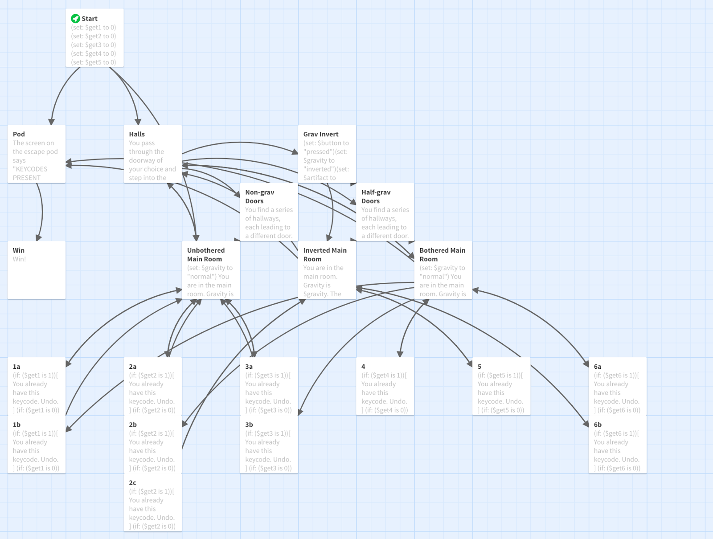

- Twine
While I wasn't involved in the creation of the twine prototype, it helped unify the teams vision for the final game.
- Grey Box
The grey box level was used for testing pathing and portal placement.
- Final Prototype
My primary role was implementing the portals, however I also consulted on other aspects. Because we knew that portals were both complicated and necessasary I started working on them immedatly.
